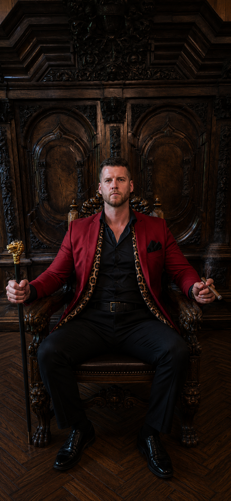

Bedankt voor het spelen — namens het entertainment team —
⚜ GAMECREATOR ⚜

Jarno Spaan
— Bedacht & gebouwd — Drink een shotje op 'm 🥃
FRIESE VLOEK!
Salire shots voor iedereen!!
—
POWER-UP KIEZEN
Eén keer per beurt
📺
CAST NAAR TV
Speel SPL Fierljeppen op je TV.
SPL FIERLJEPPEN
Voeg toe aan je startscherm — sneller starten, geen browser-balk en offline speelbaar.
SPL FIERLJEPPEN
— wachtwoord vereist —
Alleen voor leden. Vul het wachtwoord in om te kunnen spelen.
FIERLJEPPEN
— Salire Perticea Longa —
Polsstokverspringen drankspel. Wie de sloot niet haalt: SHOTJE.
AANTAL SPELERS
2
NAMEN
RONDES
10
MOEILIJKHEID
KARAKTERS
— Sprite sheets per speler —
Upload een 4-frame sprite sheet (horizontaal, transparante
achtergrond, karakter kijkt naar rechts) en koppel die aan een naam.
Wanneer een speler die naam intypt — hoofdletter-ongevoelig —
gebruikt het spel automatisch jouw sprite.